1960's: "TALKOMATIC"
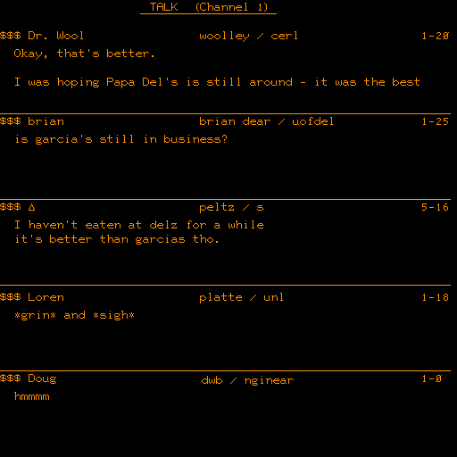Though the term dates from the 1990s, chat bubbles predate the Internet, first appearing on multi-user operating systems like Compatible Time-Sharing System (CTSS) and Multiplexed Information and Computing Service (Multics)[1] in the mid-1960s. Initially, some of these systems were used as notification systems for services like printing, but quickly were used to facilitate communication with other users logged into the same machine. As networks developed, the protocols spread with the networks. Some of these used a peer-to-peer protocol (e.g. talk, ntalk and ytalk), while others required peers to connect to a server (see talker and IRC). The Zephyr Notification Service (still in use at some institutions) was invented at MIT's Project Athena in the 1980s to allow service providers to locate and send messages to users. Parallel to instant messaging were early online chat facilities, the earliest of which was Talkomatic (1973) on the PLATO system, which allowed 5 people to chat simultaneously on a 512x512 plasma display (5 lines of text + 1 status line per person).
1980-90's: "AOL, FLASHMAIL"
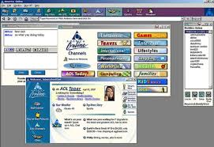During the bulletin board system (BBS) phenomenon that peaked during the 1980s, some systems incorporated chat features which were similar to instant messaging; Freelancin' Roundtable was one prime example. The first such general-availability commercial online chat service (as opposed to PLATO, which was educational) was the CompuServe CB Simulator in 1980, created by CompuServe executive Alexander "Sandy" Trevor in Columbus, Ohio.In the latter half of the 1980s and into the early 1990s, the Quantum Link online service for Commodore 64 computers offered user-to-user messages between concurrently connected customers, which they called "On-Line Messages" (or OLM for short), and later "FlashMail." (Quantum Link later became America Online and made AOL Instant Messenger (AIM). While the Quantum Link client software ran on a Commodore 64, using only the Commodore's PETSCII text-graphics, the screen was visually divided into sections and OLMs would appear as a yellow bar saying "Message From:" and the name of the sender along with the message across the top of whatever the user was already doing, and presented a list of options for responding. As such, it could be considered a type of graphical user interface (GUI), albeit much more primitive than the later Unix, Windows and Macintosh based GUI IM software. OLMs were what Q-Link called "Plus Services" meaning they charged an extra per-minute fee on top of the monthly Q-Link access costs.
1994-5: "MSN,YAHOO,EXCITE & UBIQUE"
 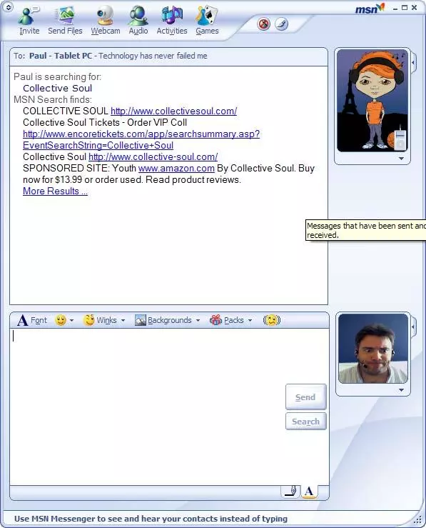
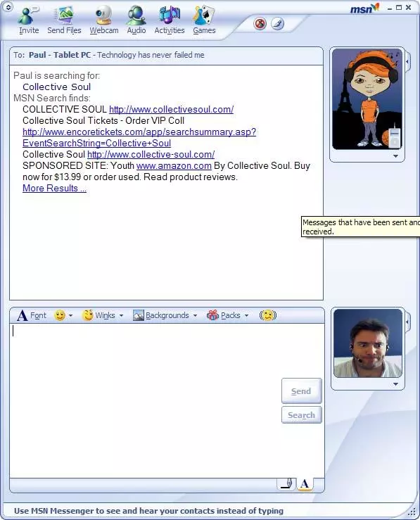
Meanwhile, other companies developed their own software; (Excite, MSN, Ubique, and Yahoo!), each with its own proprietary protocol and client; users therefore had to run multiple client applications if they wished to use more than one of these networks.
2000: "JABBER"
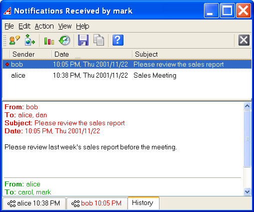In 2000, an open source application and open standards-based protocol called Jabber was launched. The protocol was standardized under the name Extensible Messaging and Presence Protocol (XMPP). XMPP servers could act as gateways to other IM protocols, reducing the need to run multiple clients. Multi-protocol clients can use any of the popular IM protocols by using additional local libraries for each protocol. IBM Lotus Sametime's November 2007 release added IBM Lotus Sametime Gateway support for XMPP.
1980's: "BBS"
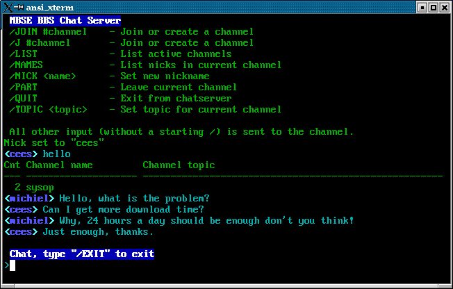 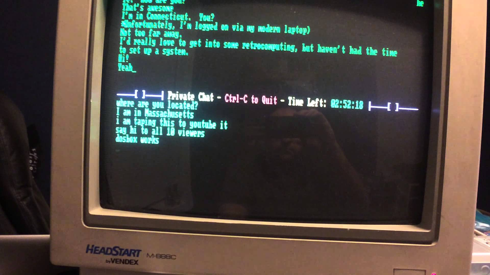Early instant messaging programs were primarily real-time text, where characters appeared as they were typed. This includes the Unix "talk" command line program, which was popular in the 1980s and early 1990s. Some BBS chat programs (i.e. Celerity BBS) also used a similar interface. Modern implementations of real-time text also exist in instant messengers, such as AOL's Real-Time IM as an optional feature.[5]
MID 1990's: "POWWOW, ICQ AND AOL"
 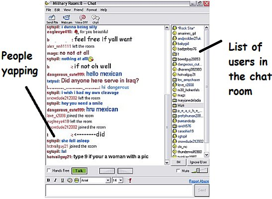
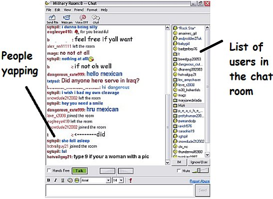
Modern, Internet-wide, GUI-based messaging clients as they are known today, began to take off in the mid-1990s with PowWow, ICQ, and AOL Instant Messenger. Similar functionality was offered by CU-SeeMe in 1992; though primarily an audio/video chat link, users could also send textual messages to each other. AOL later acquired Mirabilis, the authors of ICQ; a few years later ICQ (then owned by AOL) was awarded two patents for instant messaging by the U.S. patent office.
1998: "IBM:LOTUS SAMETIME"
In 1998, IBM released IBM Lotus Sametime, a product based on technology acquired when IBM bought Haifa-based Ubique and Lexington-based Databeam.
2010:"SOCIAL MEDIA"
 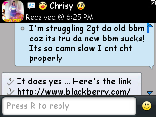
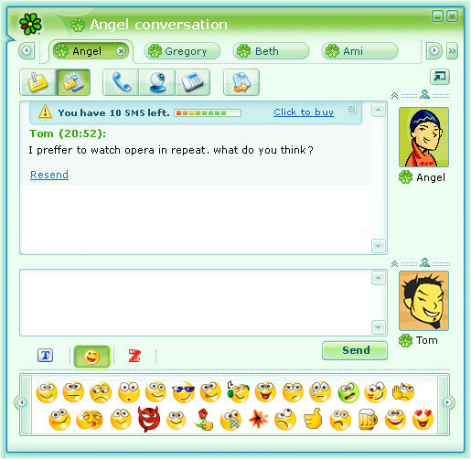
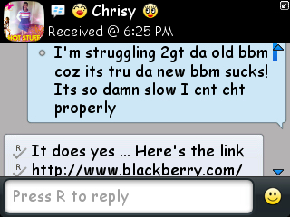
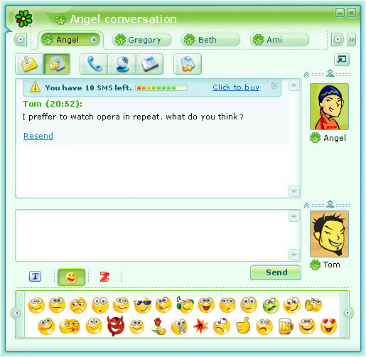
In 2010, social networking providers offer IM abilities. Facebook Chat is a form of instant messaging, and Twitter can be thought of as a Web 2.0 instant messaging system. Similar server-side chat features are part of most dating websites, such as OKCupid or PlentyofFish. The spread of smartphones and similar devices in the late 2000s also caused increased competition with conventional instant messaging, by making text messaging services still more ubiquitous.

 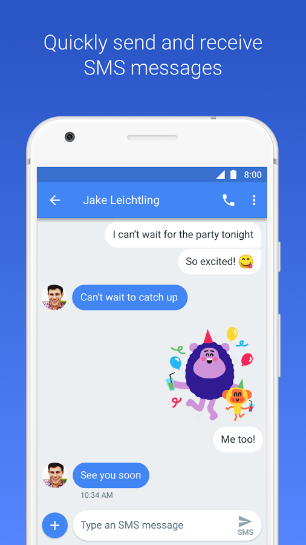
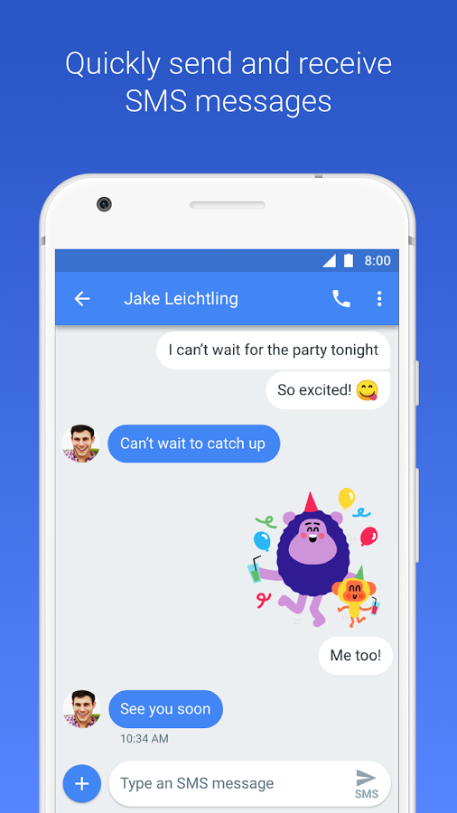